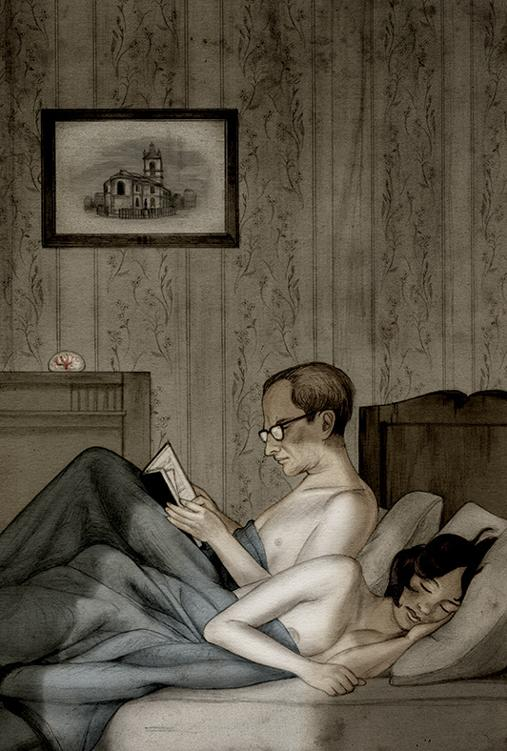

九
温斯顿累得像块果汁软糕。对的，一点没夸张，这是他自自然然想到的譬喻。他的身体弱得发软，也变得透明。他觉得如果把手掌朝亮处举起，一定会透过光线。他的血和肉全被超额的工作抽干了，只剩下软弱的骨架、皮肤和神经。触觉特别敏锐。制服摩擦脖子、肩膀，石地使他脚板发痒。伸展一下手臂也令他觉得关节吱吱作响，痛苦异常。
在五天内他工作了九十多小时，在真理部的同事亦如此。现在大功告成，在明天早上以前，什么公事也没有了。他可以在查林顿先生的房子过六小时，然后还有九小时躺在自己的床上。午后的太阳异常柔和，温斯顿正朝通往查林顿先生铺子的昏暗街道走去。他习惯地东张西望，看看有没有巡逻警察在旁，但直觉地相信今天是不可能有人上前盘问他的。他手上拿着的公文包异常沉重，走一步就撞击他的膝盖一下，使他的腿又痛又麻。包内是那本书，他拿到手已有六天了，但一直没有打开，更不用说翻看了。
仇恨周到了第六天时，大家已受够了游行、演说、呼喊、歌唱、摇旗、招贴、电影、蜡像、击鼓、喇叭、顿足、辚辚的坦克声、呼啸而过的飞机声和隆隆的枪炮声。六天下来，民众的澎湃情绪已达顶峰，对欧亚国的憎恨亦到不共戴天的程度。这个时候，预定在仇恨周最后一天处绞刑的两千个欧亚国俘虏如果落到他们手上，准会被生吞活剥。可是不早不晚，消息传来，大洋邦的交战国不是欧亚国，而是东亚国。欧亚国是盟邦。
当然，这种事党是不会承认的。只是一下子，非常突如其来，大家都知道东亚国是敌、欧亚国是友就是。敌我交替时，温斯顿在伦敦市中心一个广场上示威。那是晚上时分，苍白的面孔与猩红的旗帜在灯光下对比鲜明。挤在广场上的有好几千人，其中有一千左右穿着探子团制服的学童。在满披红布的讲演台上，只见一个瘦小的内党党员声嘶力竭地致训词。他个子虽小，手臂却特长，脑袋也奇大，几根乱发在秃顶上飘呀飘的。他整个身躯活像仇恨的化身，一手执着麦克风，一手在头上的空中拼命指画着。透过扩音器，他的声音非常刺耳，一直数落着欧亚国的暴行——屠杀、放逐、掠劫、强奸、虐待战犯、滥炸平民、夸张宣传、恣意侵略、乱毁条约等等。只要在场听他演讲，你对他的话不得不由衷信服，继而觉得义愤填胸。每隔一两分钟，群众就受他的话煽动得群情汹涌。千万个喉咙，像野兽一般狂叫着，把他的声音也压下去了。喊得最轰天动地的是学童。他口横飞地讲了约摸二十分钟吧，突然有一个信差走到台上塞了一张纸条给他。他一边打开纸条来看，一边还是滔滔不绝地说话。他的声音和态度没改，内容也没改，但一下子敌国的名字改了。一句话也不用说，大家马上就知道这是怎么一回事。大洋邦的敌人是东亚国！接着秩序大乱，在广场悬挂的旗帜与招贴上的对象全搞错了，文不对题，照片中的人像一半以上已成了明日黄花。这还用说吗，准是戈斯坦那帮阴谋分子的破坏行动！马上就有人开始把招贴扯下来，把旗帜撕得稀烂，用脚践踏一番。探子团人马个个奋不顾身爬到屋顶，把悬在烟囱上的横幅剪下来。两三分钟后，大功告成。刚才在台上致训词的内党党员，还是那个模样，手执麦克风，身子靠前，另一只手在空中比画着，慷慨激昂地在数落着敌人的罪行。他不用说上一分钟，台下声讨敌人的声音接着就喊得震天价响。仇恨周活动如常进行，只是仇恨的对象更改了。
现在回想起来，温斯顿印象最深的，就是那内党党员看了那纸条后可以在完全不变换语法的原则下，由仇恨欧亚国一转转到东亚国，丝毫不露痕迹。但除了这偷天换日的一刻外，那内党党员还说了些什么，他就没注意到了，因为他的注意力刚好在这时候分散了。探子团和其他的人忙着撕招贴时，有人拍着他的肩膀说：“对不起，我想这公文包是你的。”那人的面貌如何，他没看到。他也随手把公文包接下，一句话也没有说。书是到手上了，但最少也要等好几天才有机会看。示威一告终后，他就马上回到真理部去，虽然那时已近二十三点。真理部其他员工，也一样匆匆赶着回去办公。电幕此时正催促着他们赶回所属单位报到，看来是多此一举了。
大洋邦正与东亚国交战：大洋邦一直就是与东亚国交战。五年来有关的政治文件，大部分也因此作废。所有的报告、记录、报纸、书本、手册、电影、录音带和照片，全部得火速订正。虽然没有正式的指示发下来，但大家心里都明白，记录科各主管都希望见到一个星期内，所有曾经提到与欧亚国冲突或与东亚国结盟的记录全部一笔勾销。这种差事本来已够繁重，且不说所牵涉的工作，又不能明明白白地说出来，使过程更形复杂。记录科的同事，一天工作十八小时，中间分两段时间睡觉，各占三小时。睡觉的地方就是从地窖拿上来的床垫，散布走廊各处。吃的是三明治和胜利咖啡，由食堂的员工推着手推车来回输送。每次温斯顿到走廊去打盹前，都尽量把手上的事情先做完。但每次睡眼惺忪地爬回来时，总看到新的文件如雪片堆在桌上，飘到地上，把半个录音书写器也埋了。因此他回来后第一件事就是把这些文件堆叠起来，腾出可以伏案的空间。最要命的是这种工作并非全部是例行公事的。有的只要更换一下名字就成了，但如果要写的是一份详细的报告，那要费不少心机和想象力。不说别的，单是要把战争从地球某点转移到某地，也需要丰富的地理常识呵。
到了第三天，他眼睛刺痛得难受，每过几分钟就得擦一下眼镜。这真像与一项劳人筋骨的苦差搏斗：你可以拒绝不干，但另一方面你又给什么东西迷住似的，急着要把事情做完才觉得满足。就他记忆所及，他并没有为瞪着眼说谎而不安，虽然他对录音书写器念的每一个字，或用铅笔删改的每一句话，都是欺神骗鬼的行为。他跟科里每个同事一样，一心一意地要把谎言说得天衣无缝。到了第六天早上，气筒吐出来的东西少了。曾经有一次半小时内什么文件也没有出现。过后再跳出一个筒子来，就从此中止了。在同样的时间段中，各单位的情形也一样。整个科的人都偷偷地舒了口气。一项无以名之的艰巨工作完成了。从此没有人能够拿出文字的证据来，说大洋邦曾经跟欧亚国交过锋。令大家意想不到的是，到了十二点，部里忽然宣布说下午不用上班了，明天早上再来。自七天前从那人手上接过了那公文包后，温斯顿一直与它形影不离，上班时夹在腿中，在走廊打盹时权充枕头。现在总可带回家去了。他刮过胡子后就洗了个盆浴。水是不冷不热的，但他几乎睡着了。
他攀上查林顿先生房子的楼梯时，觉得骨骼关节吱吱作响，但感觉是异常兴奋的。人还是累，但已无睡意了。他打开了窗子，燃起小煤油炉烧开水煮咖啡。朱丽亚一会儿就来，正好利用这时间看那本书。他坐在扶手椅上，打开公文包。
书皮是黑的，装订蹩脚得很，封面既无书名，也无作者名字。印刷的字体也跟常见的略有不同。书页的边上磨损很大，而且一不小心整页就脱下来，足见看过的人不少。扉页上的题目是：
寡头集体领导的理论与实践
伊曼纽尔·戈斯坦 著
（温斯顿开始阅读。）
第一章
无知是力量
有史以来，或者说，自新石器时代结束以来，世界上可分为三类人：上等、中等和下等人。这三类人个别还有各种分类，称谓也各有不同，人数和一种人对另一种人的看法虽然各代不同，但社会上的基本结构却从来没改变过。虽然历经变乱，这基本的模式却不走样，正如陀螺仪一样，无论你朝哪边推得多远，最后还是会保持平衡。
这三类人的目标永难协调……
温斯顿看到这里，停了下来，主要是让自己知道，他是舒舒服服而又安全地看着自己要看的东西。他一个人在这里，既无电幕，钥匙孔外又不用担心有人偷听，更不用慌忙转过头去看看有没有人监视，然后马上用手按着书本。初夏甜润的空气吻着他的脸颊。远处传来小孩子嬉戏的声音。房间内除了老式钟的滴答声外，一切寂然。他舒服地靠着扶手椅背坐着，脚搁在壁炉的围栏上。这真幸福啊！突然，正如一般人拿到一本知道最后总要一读再读的书一样，他随意地跳着翻了一下，正好翻到第三章。他决定由此看下去。
第三章
战争是和平
世界分成三大超级强国，事实上在二十世纪中叶前就出现这个形势了。俄国并吞了欧洲和美国接管了大英帝国后，这三大国中的两个成员，也就是欧亚国和大洋邦，事实上已经成立了。第三个国家，东亚国，是经过混战十年后才正式出现的。这三个大国的边境，在某些地区是没有什么标准的。有时哪块地方属谁，要看战争的结果而决定，但通常来说是依据地理形势而划分。欧亚国的版图占了欧亚内陆的北面，由葡萄牙到白令海峡。大洋邦则由美洲、大西洋诸岛（包括不列颠群岛）、澳大利亚和非洲南部所组成。东亚国比其余两国小，西边的疆域还没有明确确定，以成员来讲则包括中国、南洋、日本群岛等地。
这三个超级大国，不时一国与另一国结盟，联手打第三国。如此混战下去，已有二十五年的历史了。应该指出的是，这个时候的战争，不像二十世纪初那种疯狂毁灭战争，三个国家打的都是有限战争，因为它们任何一国都没有力量摧毁对方。再说，它们也不是为了物质的理由打仗。论意识形态，它们也没有什么显著的分别。但这并不表示说，战争的行为和对战争的态度不像以前那么残酷了。事实正好相反。在这三个国家里，战争的气氛无日无之，可说已到歇斯底里的程度。对妇女强暴、抢劫、滥杀儿童、把整个地区的人民驱迫为奴隶、把囚犯活埋或用开水活活烫死作为报复行为，都视作等闲事。而只要干这种事的是“自己人”而非敌军，那就是英雄行径。以数字的观点而言，这种战争牵涉的人数不多，参与其事的大部分是训练有术的专家。死亡的人数也远比以前的战争少。真正的战事大多数在陌生的边境发生，而正确的地点究竟在哪里，一般人只能瞎猜一番。如果不是在边境地带交手的话，就在浮游堡垒防卫的海上战略地带。对居住于大都市如伦敦的人来说，战争除了经常造成物质短缺外，就是偶尔听到一个火箭弹坠地的声音，杀死了几十个平民。战争的性质事实上已经变了。再正确点说，打仗的理由是经过权衡事态的轻重而决定的。二十世纪初的几次世界大战，早有这个构想，只是其实际价值到现在才认识清楚，才认真实行。
要了解现在这场战争的本质（虽然结盟拆伙的事每几年就发生一次，实际上只有一场战事），首先得明白，这种战争是不会有决定性的。即使两国联手作战，也不能把第三国打垮。这三国鼎足而立，也势均力敌。它们的天然防御能力也各有千秋。欧亚国土地面积最大，大洋邦雄踞大西洋和太平洋，东亚国呢，人口稠密，居民辛勤努力。再说，从物质观点来讲，已没有什么东西值得动干戈了。过去几场大战是为了争取市场和资源而引起的，现在再无此需要了。三个超级大国已建立了自给自足的经济系统。如果三国为了经济的理由而交战，原因不是为了争取资源，而是人力。在这三大强国的边界间，有一个四角地区，分别接连四个港市：摩洛哥的丹吉尔、刚果的布拉柴维尔、澳洲的达尔文和南中国的香港。这四角地区合加起来的人口，占全世界的五分之一。三强就是为这四个地区和北极的所有权而常常冲突。事实上没有一个国家能够完全控制这个地区。今天你占了这一角，明天说不定就易手了。大洋邦每隔几年就化敌为友，或化友为敌，目的也不外是见风转舵，从中拿些好处。
这三国必争之地藏有丰富的矿物，有的地区盛产重要的植物原料如橡胶。不产这东西的寒冷地区，只好用化学物提炼，成本就高多了。但最有价值的莫如这地区所提供的廉价劳工。谁统治了赤道非洲，或中东诸国，或南印度，或印度尼西亚群岛，就无疑可以主宰千千万万廉价辛勤苦力的命运。这一带的居民，地位仿如奴隶，屡换主人。在统治者的眼中，他们的价值形同石油煤矿，是制造军火武器的燃料、侵略战争的马前卒、第二代劳工的工头。新一代劳工起来，制造更多军火武器、侵略更多领土……如此新陈代谢、周而复始地循环下去。我们应该知道的是，这三国的战火很少燃到这四角地区以外的地方。欧亚国的边境，就是伸缩于刚果盆地和地中海北岸之间。印度洋和太平洋各岛屿，不断为大洋邦和东亚国互相抢夺。欧亚国和东亚国在蒙古地区的界线，一直未稳定过。此外三强不断争夺的，就是北极人踪罕至的地带。这三个超级大国的势力，实在差别不大。战争都是在外围打的，战火从未蔓延到本土。靠近赤道地区的人的劳力虽受剥夺，但对世界的经济和财富并无贡献。他们生产的东西都消耗在战争上，而发动战争的目的就是要争取更多的人力物力，以作下一场战事的准备。如果这些奴隶还有什么建树的话，就是他们投入的劳力，使本来就一直进行的战事节奏加快。可是即使这些奴隶不存在，世界社会的结构，以及这结构运作的基本原则，大致上不会有什么差别。
现代战争的主要目标就是要在不提高人民生活水平的原则下，尽量消耗机器制造的成品。（根据双重思想的原理，内党的头子可以同时认识这一点的重要性，也可以完全不知有这回事。）自十九世纪末以来，怎样处理剩余消费品常是工业社会一大课题。现在世界上还有这么多人挨饿，这问题本来不应成问题的。即使不用焚烧倾倒的手段处理，剩余消费品的问题一样可以解决。今天的世界，与一九一四年以前的日子相较起来，是个荒芜、饥饿、破落的世界；与当时的人所幻想的未来世界比较，那更不知从何说起了。二十世纪初，几乎每个念过书的人想象中的未来社会，生活优裕，工作效率高，秩序井然：一个钢铁、玻璃和洁白混凝土建造起来的美丽新世界。科技发展日新月异，一般人也因此假定这种发展会继续下去。事实并不是这样。经过多年的战争与革命，国家与人民变得一穷二白，无余力发展科技。但另外还有一个原因：科技的头脑，全赖经验主义思想模式的培养，而这种思想习惯与集体结训的社会生活方式格格不入。整体来说，今天的世界较五十年前落后。有些特别落后的地区稍见改善，而一些与战争武器或警察监视平民有关的技术也有进步，但重要的科技实验与发明，可说大部分停顿了。五十年代原子战争破坏的地方，一直没恢复过来。机器带来的危机与问题仍然存在。机器一开始出现时，有头脑的人马上想到，人类做牛马的日子已经结束了。人类既不用做牛马，不平等的现象也会跟着改善。如果机器真的用作改善人类生活的工具，那么饥饿、苦工、肮脏、文盲和疾病在两三代间就可以消灭。事实上，机器虽然没有特别为上述任何一项需要效命，但有了机器就不能不生产，生产的要是食物或消费品，有时也难免分发给平民受用。就为了这个缘故，从十九世纪末到二十世纪初的五十年间，机器的出现的确提高了一般人的生活水平。
但均富社会的存在，对统治集团是一种威胁。在某种意识而言，均富社会出现之日，就是等级社会崩溃之时。哪一天每个人的工作时间缩短了、吃饱了、住有浴室和冰箱的房子、拥有汽车甚至飞机，那么最显见的，也可说是最重要的不平等社会现象已经消失。大家有了房子车子，张三和李四的分别就不易看出来。照理论说，这样一个社会是可以存在的：财富（个人可以拥有私产和奢侈品）大家平分，权力则集中在少数特殊分子身上。但实际上这样一个社会不能维持多久。社会既安定，大家又有空暇时间，平日受惯贫穷折磨的民众就会念书识字，最后也学会了独立思想。有了教育基础，他们早晚会发现，那些当权的少数分子根本是尸居余气之流，因此就会把统治者推倒。以长远的目光看，等级社会只能靠无知与贫困维持。二十世纪初有些思想家梦想过要回到农业社会去，主意虽善，却不切实际。首先，这是反潮流的倾向，因为机械化的需要几乎已成了世界人民的天性。第二，凡是工业落后的国家，在军事上就不能自卫，最后终为先进国家所统治。
另一方面，如果为了让老百姓一辈子赤贫而限制物质生产，这办法也行不通。资本主义的末期（大约在一九二〇至一九四〇年间吧），走的就是这条路子。许多国家故意让经济停滞，土地荒弃不耕，基本器材不添购，大部分人都失业，靠政府的救济金过着半死不活的日子。这种措施不但影响国防，而且由于大家很容易看出这些灾难都是人为的，日后自然就起反抗了。问题的症结因此是：怎样让工厂不停地生产而又一点也没有增加世界上的财富。货物可以制造，但却不能发行。要达到这目的唯一可行的办法就是不断制造战争。
战争的行为就是摧残，不但摧残生命，还毁灭劳力的成果。战争就是把大量本来可以改善人类物质生活的物资炸得片片碎，让其消失于太空，或沉埋于海底。不能把这些资源转给老百姓享用，怕的是他们最后变乖了，再不受控制。交战时的武器若被敌方毁坏了，那是正常的消耗。但把未动用过的武器作废，重新再做新的，也符合消耗劳力而不生产任何消费品的原则。举个实例吧，建造一条浮游堡垒的人力物力，足够制造几百条货船。浮游堡垒一旦作废，又得重新动用所有的人力资源再做一条。而浮游堡垒的存在，并没有改善任何人的物质环境。原则上，制造战争的目的是为了消耗供应国民的基本需求后剩下来的物资。事实上国民的基本需求从来没满足过，一半以上的民生必需品常常缺货。这是有好处的。政府的政策是故意要让即使算是既得利益阶级的人也稍尝一下物质缺乏的滋味，好让他们偶一得到些甜头就有飘飘然的感觉。再说，也只有这样才显得张三比李四神气。以二十世纪初的标准来说，即使内党党员过的也是刻苦的生活。可是正因为他们有特权享用一些奢华的东西，如宽敞的房子、较好的衣服料子、私人用的汽车或直升机，而除了吃的喝的和抽的烟草比别人高一等外，还有两三个用人使唤——这就与外党党员的生活有天渊之别。而外党党员比起不见天日的群众来——就是我们所说的无产者——又有不少的好处。整个社会的气氛就像个四面受包围的城市：谁能吃到一块马肉就是富人。另一方面，既然大家认识到国家处于战时状态（因此危机四伏），为了求生存，也只好把权力交托到少数的几个人手上了。
战争不但可以完成破坏的任务，还可以创造可供利用的心理状态。理论上说，要消耗世界上的剩余劳力是轻而易举的事。建教堂或金字塔、在地上掘洞穴然后再将它填满，这不是绝佳方法吗？再不然就是大量生产物品然后纵火付之一炬。但一个等级社会的根基，除了经济外还有情绪。无产者的士气如何无关紧要，只要他们继续像蚂蚁一样工作不懈就成。要紧的是党本身。照理说，即使是身份最卑微的党员，也是个能干、勤奋、在有限的范围内还可能表现小聪明的人。但这还不够，他还得是个言听计从的无知狂热之徒。整天支配着他的就是恐惧、憎恨、崇拜和胜利的亢奋感。换句话说，他应该经常保持一种处于战时状况的心态。是否真有战事发生？那不打紧。而既然现代战争无全面胜利的可能，前方战事处于顺境也好逆境也好，都无分别。最重要的只有一样：经常保持战时的心境。党需要党员一心二用已是极为普遍的事，而这种境界在战争情绪中最易臻善境。党员的地位越高，这种心态也越显著。因此内党党员对战争的歇斯底里情绪和对敌人的仇恨也特别强。内党党员职责在身，有时是需要知道有关战争的新闻报道中，哪一条是真的，哪一条是假的。有时他也知道整个战争都是托空的：要么是根本没有发生，要么是作战的目的与冠冕堂皇的官方宣言完全是两回事。但这完全无关系，因为他略施双重思想的法则，就可以把其中矛盾统一了。为此原因，没有一个内党党员怀疑过大洋邦跟敌国所动过的干戈，而最后光荣的胜利毫无疑问是属于世界盟主大洋邦的。
所有内党党员都把征服世界视为牢不可破的信念。怎样去达成目标呢？一是扩充领土，伸张权力。这是渐进式的征服。急进式是发明无可抵御的新武器。大洋邦政府因此非常热中发展新武器，而对有想象力与发明天才的人来说，研究新武器计划也成了少数的思想出路的一种。在今天的大洋邦中，“科学”一词，名存实亡。新语辞典中找不到这个词。过去所有科学上的成就都是经验主义思想模式的结晶，而这种模式是与英社的信条格格不入的。大洋邦即使在科技上有些进展，其目标也是为了削减人类的自由。在实用技术方面，如果不是大开倒车就是迟滞不前。耕田用牛马，写作用机器。但任何对党执政有利的事情（如战争与警察查人私隐的科技），经验主义的研究方式还是受到鼓励的，最少是可以容忍的。党的两大目标是征服世界和全面消灭任何独立思想的种子。有鉴于此，党因此列了两大课题：一是如何探知一个人的脑子正想着什么；二是如何不让对方有时间准备前，在两三秒间一鼓作气杀死好几亿人。今天的科学研究，就是集中在这两大课题上。而今天的科学家只有两种。一种是一身兼备心理学家的训练，又像法庭庭长一样热中追究别人根底的专家。他们把人类面部的任何表情、手足的动作和声音的腔调，都研究得清清楚楚。这就是“有诸内者必形诸外”的实验求证。此外他们研究药物、催眠术、震惊疗法和毒打的各种功用，寻求要犯人从实招来的最有效手段。第二种是化学家、物理学家或生物学家，各尽所长地去研究与杀人有关的学问。在和平部庞大的实验室里，在隐藏于巴西森林的实验站里，在澳洲的沙漠地带，在南极洲的荒岛中，你可以看到这些科学家和其他专家孜孜不倦地工作。有些人忙着拟定未来战争的作战计划。有些人则要发明更大的火箭弹、威力更强的炸药和更难穿透的装甲钢板。也有人研究杀伤力更大的毒气，或是毒性极烈可以溶在水里的毒药，足以把整个洲的农作物全部毁掉。这一组专家还有任务：发明一种可以对付任何抗体的病菌，使所有药石失灵。军械专家负责的，是发明一种“潜地车”，可以埋藏于地下走动，一如潜水艇徜徉于深海一样。另外一个努力的方向是：发明一种可以停在空中的飞机，一如船只停于水中。还有一个特技小组的工作值得一提。他们要在太空设反光镜台，把太阳的热力浓缩成杀人武器。另外一个计划是，引导地心热力制造人工地震和海啸。
但上述计划，一个也没有接近实现阶段，三强中谁也没有比谁领先。我们要特别指出的是，三强早已拥有原子弹，一种比科学家正研究的还要恐怖千万倍的武器。虽然党依照惯例宣称原子弹是他们发明的，事实上早在四十年代初就出现了。第一次大规模使用原子弹大约是五十年代初的事。几百颗原子弹掉在各工业重镇上，主要受灾的地区是俄国的欧洲大陆、西欧和北美。这次灾难给全世界各国领导阶层一个很大的教训：再来几颗的话，全人类的社会组织就完蛋了。没有社会，他们就没有权力。自此以后，大家虽然没有签订什么条约或交换过什么口头承诺，原子弹战争就绝迹了。但三强还是不断地制造原子弹，相信决定性的一刻早晚要降临，这样它们就可以先发制人。别的方面，战争的方式三四十年来没有什么大改变。使用直升机的次数比以前多，因为轰炸机已渐为飞弹取代。军舰已经落后，代之而起的是几乎不可击沉的浮游堡垒。但除此以外就没有什么新发展了。坦克、潜水艇、鱼雷、机枪，甚至步枪和手榴弹还继续使用。报纸和电幕虽然对战况夸大，事实上伤亡的数字远比从前的战争少，那时候两三个星期内的死亡人数动辄以十万百万计。
三强尽量避免发动可能遭遇伤亡惨重的战争。如果它们要大举行动，通常是突击友军。这就是它们共有的战略。这战略是打打谈谈，一到时机成熟就用迅雷不及掩耳的手法把一连串包围着对手的基地夺过来，成功后就跟对手签友好条约。需要多少年才能解除对手对你的戒心，你就友好多少年。在这些年中，各战略据点都布满了装有原子弹的火箭，等候时机全部发射，让对手万劫不复，永无还手能力。一个对手解决了以后，又和剩下的唯一超级大国签友好条约，准备第二个攻势。这种策略不用说永无实现的可能，等于做白日梦。事实上，三强从未进攻过敌国的本土。所有的军事行动，都是沿着赤道至北极那些争执地带发生的。这就是三强的边界常常发生问题的原因。照理说欧亚国要征服英伦三岛，易如反掌。大洋邦若要把边界推到莱茵河或甚至波兰的维斯瓦河，也似探囊取物。但这样就会破坏有关国家的“文化整体”。这一不成文的规定，三强都一直遵守着。理由是这样，如果大洋邦征服了以前叫法国和德国的地区，要么是把当地居民全部杀光（那得花很大气力），要么是把差不多一亿人口同化。单从科技发展而言，这些人的成就与大洋邦国民不分伯仲。其余两国面对的，也是类似的问题。就它们的社会结构而言，国民除了偶尔遥望一下战犯或有色人种的奴隶外，绝对不能跟外国人接触。即使是暂时的盟友，也得以猜疑的目光看待。除了战犯外，一般大洋邦居民从未见过欧亚国和东亚国的国民是个什么样子。他们又不能学习外语。党怕的是，一旦与外国人接触，他们不但会发现外国人也有眼耳口鼻，而且最后总会知道，党告诉他们有关外国人的坏话都是一片谎言。这样，他们久居的封闭世界开了洞口，而他们赖以支持自己士气的恐惧、仇恨和自以为是的道德感就瓦解了。三国因此认识到，波斯、埃及、爪哇或锡兰易手多少次都无所谓，但除了互丢炸弹外，主要的疆界千万别越雷池一步。
除了这个不破坏“文化整体”的原则外，还有一个从不说出来但大家照行不误的事实，那就是这三大国的生活形式都是大同小异。大洋邦托身安命的哲学是英社；欧亚国当道的是新布尔什维克思想；东亚国奉行的信仰出于中文，通常译作“死亡崇拜”，但相信翻成“消灭自我”更为贴切。大洋邦的国民不准学习这两国的哲学思想，党指导他们对这些信仰口诛笔伐，斥为败坏道德与常识的野蛮言论。妙绝的是，这三种哲学一来难辨雌雄，二来它们所支持的社会制度又是同出一辙。大洋邦也好，东亚国或欧亚国也好，到处都是千篇一律金字塔式的建筑物。像大洋邦一样，其余两国也有老大哥型的领袖。它们的经济系统，也是为了维持连绵不绝的战争而存在。由此可以看出，三强若把任何一方并吞，不但没有好处，反而危及本身。它们像一个三脚架一样，你支持着我，我也扶持着你，大家互相依靠。就像大洋邦的内党党员一样，其余两国的统治集团既洞悉世界大事真相，又一无所知。他们献身于征服世界大业，同时也清楚战争不能停止，打仗不能希望打赢。既然本土永无被征服的可能，歪曲现实的勾当就可为所欲为。这不但是英社的特色，其余两个对手也各有一套掩人耳目的把戏。我们在这里得重复说过的话：连绵不绝的战争把战争的基本性质改变了。
在从前，战争之所以为战争，无非是它早晚有完结的一天，谁胜谁负，骗不了人。过去的战争也是人类社会直接接触现实世界的一种经历。不错，任何时代的统治者用尽各种手段去瞒骗老百姓，不让他们知道外间情况的真相，但这也有个限度。如果局势的发展牵涉到军事上的胜负，就不能再讲假话了。打败仗就会失去自由，就要接受其他悲惨的后果。统治者因此得对老百姓提出严重警告：我们不能吃败仗呵！现实世界不能装着看不到。在哲学、宗教、伦理和政治的范畴中，二加二可以等于五，但你设计手枪或飞机，二加二只能等于四。不切实际、毫无效率的国家迟早会被人征服的，而错觉与幻觉无助于效率精神的发展。一个国家要有效率，得要有鉴往开来的习惯，向历史学习。过去的历史书和报纸，难免有其歪曲与夸张的部分，但像今天那样伪造历史，却绝无仅有。战争的威胁可以帮助我们保持头脑清醒，而对统治阶级而言，战争也是个最严酷的考验。无论战胜战败，统治阶级都有责任。
上面说的是古老的战争。今天打的既是连绵仗，战争已无威胁可言，亦谈不上有什么军事需要。科技发展可以停顿，而最显明的事实可以否认或置之不理。我们前面说过，勉强可以称为科学的与武器研究有关的计划，还在进行着。但我们前面也说过，这类研究与做白日梦差不多。这是只问耕耘不问收获精神的写照。一切效率，包括军事的，都不重要。在大洋邦除了思想警察外，其他机构都是拖拖沓沓，懒散不堪。既然三强永远不怕被对手征服，因此各成独立天地，可以放手去散播自己的异端邪说而不用担心别人斥其谬误。只有在日常起居生活中你才会感到现实的压力：饿了要吃饭、渴了要饮水、冷了要穿衣、夜深了要找居室……还有就是提防别误饮毒药或不小心自高楼跳出窗户。当然，在生与死之间、肉体的快感和痛苦之间，还存在着明显的分别，但这几乎也是人类感觉中剩下来的唯一明显的分别了。大洋邦的居民既跟自己过去的历史和国外的世界隔绝，就无形中变成浮游于星际的太空人，真的不分南北与东西了。这类国家统治者的权力是绝对的，古埃及的法老王或罗马的恺撒大帝都无法望其项背。他们的责任是不让人民吃得太饱，但也不能让他们饿死得太多，否则自己就不好办事。事实上，他们要维持跟对手一样低的水平。这个最低的标准一旦达到后，他们就可为所欲为，把地球说成四方扁平的都无所谓。
三强所打的仗，如果我们拿以往战争的标准看，实在是装腔作势而已。这正如某种反刍动物打架时，头上的角的角度预先调好，所以看起来虽然搏斗得轰轰烈烈，实际上不伤皮肉。但装腔作势的战争，也有其意义。一方面它可以消耗剩余物质，另一方面又可维持等级社会所需要的精神状态。我们不难看出，这样的战争实在是内战的一个新花样。从前各国的统治者，大概认清了大家共同的利益，与敌国交战时也会手下留情，不把破坏面扩得太大。但他们真的打仗，战胜的一方在战后总会掠劫战败国一番。我们今天的战争可不一样，打的不是敌国的人马，而是自己的子民。战争的目的不是防止侵略或侵略别人，而是保持现存的社会结构一成不变。“战争”这名词因此容易使人误解，因为既然一天到晚都有战争，就等于无战争了。战争给从新石器时代到二十世纪初的人类那种特殊的负担已经消失，代之而起的是一种截然不同的压力。我们应该注意的是，即使三强从此互不侵犯，和平共存，各保领土完整，这种压力的效果仍然不减丝毫。因为在那情形下，各国还是自成天地，不会让令自己国民大开眼界的事物与影响渗进来。持久的和平就等于持久的战争。虽然大部分党员只是一知半解，但这就是党的口号“战争是和平”的精义所在了。
看到这里，温斯顿把手上的书放下。远处有火箭弹爆炸之声。在没有装电幕的房间闭门读禁书，这种幸福感仍在心中荡漾着。疲倦的身体靠着柔软的椅背，窗外飘来的微风拂着面颊，一个人安全地独处斗室，这真是一种刺激的感受。这本书把他迷住了，或者可以说这本书增加了他的信心。不错，书上所说的事，对他说来都不新奇，但这正是迷人的地方。如果他有机会把自己凌乱的思想组织起来，他要说的话大概也是这样。这书的作者的思想跟他接近，但气魄大多了，而且更有系统，更胆敢直言。最好的书就是描写你已经熟悉的事情的书，他想。他正要倒翻到第一章时，就听到朱丽亚在楼梯上的脚步声，乃连忙站起来迎接她。她把褐色工具袋扔在地上后就投到他臂弯来。他们已有一个多星期没见面了。
“那本书我已拿到了。”吻过后，他说。
“真的？那好极了。”她随口说，显然没有多大兴趣，接着就跪在煤油炉旁边煮咖啡。
他们在床上躺了半小时之后才旧话重提，谈到那本书。入夜凉意渐浓，他们拉起床罩盖着身子。楼下传来熟悉的歌声和皮鞋摩擦着石板路的声音。温斯顿第一天到这里时看到的那个手臂通红的结实妇人，好像是后院一个经常的摆设一样。只要还有一丝光线，你就可以看到她在洗衣盆与晒衣绳之间走来走去，口里不含着衣夹时就郎呀妹呀高歌一番。朱丽亚躺在一边，好像随时要入梦了。他伸手把地上的书捡起，靠着床头的木板坐起来。
“我们要把书看完，”他说，“我们就是你和我。兄弟会所有会员都要看。”
“你念吧，大声点。这方法最好，因为你念时可以给我一边解释。”说着，她的眼睛已闭起来了。
时钟指着六点，那就是说十八点。他们还有三四小时在一起。他把书摊在膝上念起来：
第一章
无知是力量
有史以来，或者说，自新石器时代结束以来，世界上可分为三类人：上等、中等和下等人。这三类人个别还有各种分类，称谓也各有不同，人数和一种人对另一种人的看法虽然各代不同，但社会上的基本结构却从来没改变过。虽然历经变乱，这基本的模式却不走样，正如陀螺仪一样，无论你朝哪边推得多远，最后还是会保持平衡。
“朱丽亚，你是不是还醒着？”
“我在听着呵，你念下去吧，精彩极了。”
他接着念下去：
这三类人的目标永难协调。上等人要维持现状；中等人要抢上等人的位子；下等人呢，如果还有目标的话，就是要消除等级的分别，创造人人平等的社会（但下等人有一特色：他们被劳役所缠，偶尔才会注意到自己日常生活以外的事情）。自人类有历史以来，一种轨迹大致相同的斗争反复发生。上等人掌权到一段相当长的时间后，早晚会突然失去自己的信仰，或怀疑他们是否还能有效率地统治下去，或两者一齐发生。这个时候中等人就假为自由和正义而战之名，把下等人拉到自己的阵线，推翻上等人。目标既达，中等人就把下等人一脚踢下深渊，让他们回到原来的牛马生活中，自己呢，就升格为上等人。今天有一个中等人集团从上等人或下等人阶级分裂出来，但可能两者都有，于是斗争又重新开始了。这三类人中，只有下等人从来没达成他们既定的目标。那就是说，人类没有尝过一天人人平等的滋味。如果我们说有史以来人的物质生活从来没改善过，那未免夸大其词。即使在今天衰退的环境中，一个普通人的物质生活还是比几个世纪以前的祖先要好。但财富的增加、掌权人态度的改善、社会的改革或历经流血的革命，一样没有把人人生而平等这理想实现一分一毫。从下等人的观点看，历史上所有的变迁只有一个意义：主人的名字换了。
到了十九世纪末期，上述那种斗争模式越见显著。当时有不少新兴学派出现，认为历史的发展是周期性的，并肯定人类不平等的现象是无可改变的法则。这种说法自然古已有之，不同的是现在的表述方式和以前却有显著的分别。以前为等级社会存在的必要说话的，几乎全是上等人。除了王侯巨卿外，还有寄生在他们身上的神职界和法律界。他们的言论通常都提到天国之类的最后归宿，作为人生缺陷的补偿。中等人呢，只要他们还在夺权过程中，就常常引用“自由”、“正义”和“博爱”之类的字眼。现在可不同，只希望将来能掌权但实际尚无权力的人，一开始就攻击博爱这个观念。过去的中等人打着平等的旗帜去搞革命，虽然他们干的实在是以暴易暴的勾当。新的中等人集团更进一步，他们在闹革命前就公然露出自己暴政的面目。社会主义的理论出现于十九世纪初，是接连古代奴隶叛乱思想的最后一个环节，更深受过去乌托邦思想的影响。但一九〇〇年以后出现的社会主义各种门派都有这个共同点：差不多都扬弃了实现自由平等的理想。二十世纪中叶的运动，无论是大洋邦的英社也好、欧亚国的新布尔什维克思想也好、东亚国的死亡崇拜也好，无不着意奠定“反自由”和“反平等”的基础。当然，这些新运动是从旧运劲衍生出来的，除了沿用旧名外，还偶尔耍出它们的意识形态作幌子。但新运动背后当权者的真正目标是要抑止进步和在对自己有利的时刻冻结历史。跟旧例一样，历史的钟摆摇到一边，但这次不同的是，钟摆就停顿在那一边。过去的历史轨迹，也重演了一部分：上等人给中等人推翻；中等人变了上等人。但这一次飞上枝头的上等人出了奇谋，他们将永远盘踞高位，永远不被推翻。
社会主义之能够兴起，部分原因乃是我们的历史感日趋成熟，对历史的知识也日见丰富。这种情形在十九世纪前是不可能出现的。历史周期说的概念现在可以理解了。既然可以理解，就可以随意调整。但最基本的原因是这样：到了二十世纪初，人人平等这理想最少在技术上说来是可以实现的。不错，各人聪明才智有别，工作也因此有专门化，某甲比某乙待遇好些势所难免。但阶级分明、财富悬殊太大的情形，再无必要了。以已往历史发展的各阶段看，阶级区分不但无可避免，而且绝对需要。不平等的制度是追求文明得付的代价。机器发明了以后，这情形改变了。虽然不少其他工作还需要人来做，但这些人再用不着像祖先一样在社会上和经济上过着各种不同阶级的生活。从快要夺权的新中等人集团的观点看来，人人平等这观念再不是要追求的理想，而是需要避免的危机和威胁。在古老的社会中，因为正义和平的事实无法出现，大家都相信这样的社会可能存在。几千年来，人的想象力一直被“桃花源”式的乐土所吸引：居民过着守望相助的生活，无法律束缚，更无须替人家做牛马。这个憧憬对历代政权变迁后的受益者也一样有吸引力。就拿法国、英国和美国革命者的后代来说吧，他们谈到人权、言论自由和法律之前人人平等这些观念时，也多少相信自己是诚恳的，而他们的作为也多多少少受到这些观念的影响。可是到了二十世纪四十年代，所有政治思想的主流都是独裁主义的。正当在人间建乐土的可能性日渐成熟时，它却受到诋毁。所有新政治学说，异名同旨，都大开倒车，引导当政者回归到等级社会和高压统治。大约到了一九三〇年，“收紧”空气开始蔓延，许多放弃了多年（有些近几百年）的措施，又开始变得普遍起来：未经审判就抓人下狱、强迫战犯做奴隶、公开处决、严刑迫供、关禁人质和把整个地区的人口迁移。最令人意想不到的是，为这种措施辩护的人中，竟有不少自称为开明进步的人。
经过了十年的外战内战，经过了世界各地发生的革命和反革命活动，英社、新布尔什维克思想和死亡崇拜才慢慢演进成完整的政治理论。实际上，这些理论早在本世纪初各种独裁制度中萌芽。不但如此，三强日后划分的世界版图，亦早在那时看到轮廓了。哪种人最后统治世界，也一样看得清清楚楚。新贵族阶级大部分由下列各种人组成：官僚、科学家、技师、工会领袖、公共关系专家、社会学者、教师、新闻从业人员和职业政客。这些人要不是受薪的中产阶级就是工人阶级的精英，现在由中央政府和垄断企业把他们一一收买，为新政服务。与以前的相应阶层相比，他们的贪婪心没有那么重，也不那么容易受物质的引诱。可是，他们对权力的欲望却大得可以。最显著的分别还有一点：他们自知地位特殊，也因此更热中打击对手。最后这种分别关乎重大。跟今天的独裁政权相比，以往的独裁者实在幼稚得像玩票。旧时的统治集团，常常或多或少受到自由思想所感染，什么地方出了漏洞，听其自然。他们也懒得理会其子民心中打什么主意；事情不表面化，从不紧张。以今天的标准衡量，中世纪时的天主教教会也显得有容乃大。过去政府对人民的钳制不像今天有效，其中一个原因就是当时的执政者没有可以二十四小时监视其子民的工具。印刷术的发明，方便操纵民意。电影和收音机出现后，更收事半功倍之效。电幕——一种可以同时播送和收听的机器——面世后，再无私人生活可言。每个公民（或者说每个值得监视的公民）的一举一动，尽收警察的眼底。党发动宣传攻势时，一天二十四小时你听到的就是播音员的声音。一个政府可以强迫人民乖乖地听话，可以叫他们以执政者的旨意为自己的意愿，这是人类有史以来前所未有的事。
五六十年代革命时期过后，社会又依上、中、下老例重组一番。但新的上等人集团不再像前辈那样依本能来统治，他们非常明白要保护自己的权势需要采用什么手段。他们老早就认识到寡头政治最稳定的基础是集体领导。由一个小集团拥有财富和特权，把守起来比较容易。本世纪中叶喊得震天价响的口号“消除私有财产”，其实际的意义是：把财产夺到少数人的手上来。我们得注意的是，这少数人是一个集团。从个人来讲，党员除了身边琐碎物品外，不能拥有任何东西。从集体来说，党拥有大洋邦的一切，因为它不但管制一切，而且还可以随意调动一切。革命后那几年，党在这方面所采取的措施没有遭受什么反对，因为他们把这种行为说成是捐私归公。大家都知道资产阶级一清算后，社会主义就跟着到来。资本家真的清算得一干二净：工厂、土地、矿场、房子、交通工具一一没收。既然这些东西再不是私产，于是就变成公产。英社由早期的社会主义运动衍生出来，承袭了这运动的名词术语，也是第一个执行社会主义公有化的政权。结果是事先预料到的：经济不平等现象永久化。
但要奠定等级社会的万世基业，可不这么简单。一个统治集团被推翻，只有四个可能性：国家被外国征服；管制不严，民众谋反；疏于防范，让强大而对现实不满的中等人集团坐大；最后一个是失去自信，无心恋栈权力。这四个因素很少独立出现，通常都是并发的，只是程度不同而已。任何统治集团如果能够防止上述四种问题发生，就可永远掌权。由此可见领导人的心态是党存亡的关键。
本世纪中叶后，第一个危险因素已不存在。三个分割世界的超级大国事实上谁也征服不了谁。假若其中一国的人口有缓慢的变化，那就会出问题，但政府权力既然无远弗届，这种人为差错可以防止。第二个可能性仅是理论上的问题。民众从来不会自动自发地去造反，他们更不会因为受到压迫而作乱。其实，他们既然与世隔绝，没有其他标准来比较，又怎会知道自己是受人压迫呢？旧时代常常出现的经济危机不但已无需要，而且不准发生。但这不是说再无脱节混乱的局面出现，而是出现了也没有什么政治后果，因为老百姓纵有冤情，也无路可诉。至于有关生产过剩的问题，可说是自工业革命以来一直存在于我们社会的问题。但这问题可用连绵战战略解决（详见第三章），连绵战对提高老百姓士气作用极大。因此从我们现在的统治者的眼光看，目前最大的危机是一个能干、权力欲强而又怀才不遇的新集团分裂出去。要是自由主义思想和哲学上的存疑精神散布到他们的圈子去，后果不堪设想。简单地说，这问题是教育性的。答案是：应该经常改造决策者和直属其部下人数较多的执行者。其余群众，只要给他们反面的影响就成，如女的唱靡靡之音，男的看色情书报，诸如此类感染。
既有这幅背景，你就可以推论出大洋邦是怎样一个社会。金字塔的顶峰就是老大哥。老大哥是全知全能、永不犯错误的。每一种成就、战果、科学发明，所有人间的学问和智慧、快乐和德行，都是拜老大哥的领导和启发才出现。谁也没见过老大哥，他是招贴纸上的一个面孔、电幕上的一个声音。我们几乎可以肯定地说老大哥长生不老。他在哪年生的，谁也说不清。老大哥就是党对外的代言人。他的作用是包罗爱、惧、敬各种情感于一身。这也对的，对一个人投射这种情感总比对一个组织容易。老大哥以下是内党，党内限于六百万人，或人数不得超过大洋邦人口的百分之二。内党之下是外党。如果内党是大脑，那么外党就是四肢了。外党之下是民智未开的群众，我们惯称无产者，人数约占总人口的百分之八十五。用我们前面提过的分类法称呼，无产者是下等人，因为赤道附近的奴隶人口，主子经常更替，不能作为大洋邦社会的一部分。
照理论讲，这三类人的身份并不是世袭的。内党党员的子女长大了不一定就是内党党员。入党是要通过考试的，应试的年龄是十六岁。党员资格不受种族限制，亦无地域偏见。犹太人、黑人、南美洲的纯种印第安人等均有在党内位居要职的代表。某一区的行政长官，通常都是在该区域产生的。无论你住在大洋邦哪一角落，你都不会觉得自己是殖民地身份的人，受首都的权贵遥遥控制。大洋邦根本不设首都，而挂名的领袖的行踪谁也不知道。语言方面，英语是大家通晓的语言，新语是官方语言，但除此以外再无其他限制。维持党的领导的力量，靠的不是血统，而是共同的主义。无可否认，我们的党骤看来阶级分明，形同世袭。一个阶级跟另一个阶级的人，极少往来，比资本主义当政时或工业革命前的日子有过之而无不及。在党的两个组织之间，偶尔也通信息，但目标不外是把内党的脓包踢开，或把野心勃勃的外党党员引进，不让他们因对现状不满而找麻烦。实际上，无产者是没办法升格到党内来的。他们中若有才华特别高的（因此也最可能成为不满情绪的核心），思想警察就格外留意，伺机清除。但这种事情也不是一成不变的，也与原则无关。党并不是旧时所说的“阶级”，也不会像从前那样把权力“传授”给儿女。因此到了真的无法找到最能干的人负责领导工作时，它是随时愿意从无产者圈子中招募新一代的好手。在非常时期，党的非世袭制度发生过很大消解反对势力的作用。老一派社会主义者，一生致力于反抗他们所谓的“阶级特权”。他们有这么一个假定：凡是非世袭的制度都不能持久。他们错了，没想到寡头政治的延续不靠父子相传那一套。他们更没有静下来想一想，世袭的贵族制度都是短命的。像天主教教会这种拔选继承人的组织反而绵延不绝。寡头政治的真义不在于个人的私私相授，而是某种世界观和生活方式的持久延续。这是一种死人控制活人的政治制度。统治集团之所以为统治集团，就是因为它有权提名继承人。党无意保留谁的命脉，它只要保全自己的政治生命。只要等级结构保持不变，谁掌权都无关紧要。
所有反映我们这时代特色的信仰、习惯、趣味、感情和心态，一方面固然是为了要维持党的神秘性，但更大的用意是不让人家看到我们现有社会的真相。武装造反，或任何造反的初步动向，现在是无可能的事。无产者是没有什么可怕的。你让他们自生自灭的话，他们将一代接一代地活下去，工作、繁殖、死亡。他们没有谋反的冲动，因为他们没有能力理解除了大洋邦外还有其他社会与国家。假若工业技术进步到某一程度，党非提高他们的教育水平不可，那时说不定会有危险。但是正如我们前面说过，大洋邦的军事和商业既无名副其实的对手，无产者的教育程度普遍下降。党的领导对无产者的意见是不屑一顾的。无产者可以享受知识自由——因为他们根本无知识可言。党员就不同，即使他们对鸡毛蒜皮的事稍持异见，党也不会放过。
党员由生到死都在思想警察的监视之下。即使他一个人独处，也不敢肯定真的再没有人看着他。不论他在哪里，睡着或醒了时，工作或休息时，在浴缸或在床上时——思想警察可以完全不让他知道地查清他的底细。他的一举一动，都不会被放过。他交的朋友、消遣方式、对妻子和孩子的态度、独处时脸上的表情、做梦时说的梦话，甚至他身体转动时特别的姿势，一一收入关心他的人的眼底。这还不算，除了他犯的过失他们查得出来外，他的怪癖（即使丝毫不伤大雅）、他突然改变的习惯、他紧张时的小动作（这可能是他内心冲突的征象），他们都观察入微。党员无任何选择的自由。可是另一方面，他的行动又不受任何法律或书面制定的守则限制。大洋邦不设法律。他的某些行动与思想被侦查出来后，难逃一死，但他并没有犯法，因为从没有人告诉过他这是犯法行为。同样，党历年搞的清洗、逮捕、刑供、监禁、蒸发等等，都不是为了惩罚他们所犯的罪，这不过是清除将来可能要犯罪的人。党员因此不但思想要正确，而且还要警觉。党要他们保持的观念与态度，从来不会明明白白地说出来，因为一说出来就难免露出英社内在的矛盾。如果一个人天生思想正确（新语叫“好思者”），那么在任何情况下他们不用思考也晓得什么是真正的信仰或正确的情感。但话又说回来，一个自孩提时开始就受严格思想训练的人——在新语所说“罪停”、“黑白”和“双重思想”范围内打转的人——长大后就不会愿意也不可能就任何问题深思熟虑了。
作为一个党员，应摒绝一切个人情感。他对党的事情热心不懈，对外国的敌人和国内的叛国者永远仇视。党的胜利就是自己的胜利。在党的权力与智慧面前，自己永远渺小，微不足道。任何因无聊、乏味的生活而产生的不满之情，都可由“两分钟仇恨”节目消解。任何因玄思的习惯可能产生的怀疑或反叛心态，都可由他早期所受的思想训练压制下去。这种训练的第一课简单不过，连小孩子都可接受，新语中叫“罪停”，意思是说危险思想还没进大脑前就有自动关闭思路的本能。笼统地说，受过这种训练的人都有“思无邪”的习惯。他们触类不会旁通，看到荒谬的逻辑错误可以视若无睹，听到对英社不利的言论可以故意误解，自己的思想若有走上歧途的危险时马上就会觉得面目可憎。简单地说，“罪停”就是保百年身所需要的愚蠢。但光是愚蠢还是不够的，因为正确思想的全面意义有这么一个假定：你控制你脑筋活动的能力，应该像柔软体操专家控制自己的身体肌肉那么灵活自如。大洋邦社会就是依靠老大哥全知全能和党永不犯错这个信念支持的。事实上老大哥既非全知全能，而党也犯错误，因此处理事实时就需要处处因时制宜，经常保持灵活的伸缩性了。“黑白”一词，应运而生。和其他许多新语中的词一样，此词有两个自相矛盾的意义。用在对手身上，就是说某某有颠倒黑白的习惯，强词夺理，不顾事实；用在党员身上，这表示某某对党的忠诚，为了党的需要不惜把黑说成白。但这也表示某某有相信黑是白的能力，有承认黑是白的本性，他一股脑儿忘却自己曾经有过黑白分明的习惯。历史为什么要经常改写，其理至显。而这种改史的工作由受过黑白训练的专家担任，是名副其实的“得心应手”。黑白思维逻辑，在新语中叫双重思想。
改史的理由有两个。一是辅导性的，也可说是防范性的。原来党员的心理也跟无产者差不多，他们能够在现实生活中任劳任怨，无非是对过去的日子一无所知，因此无从比较。不让他们看清历史的理由跟把他们与外国人隔绝的道理完全一样，这样他们才会相信他们的生活比祖先过得幸福，而物质生活标准也经常提高。可是这还不算是最重要的理由。改史的最大任务是保证党永远不犯错误。单是订正演说词、统计数字和所有记录以证明党的估计与预测完全正确还不够，党规的改变或和别国缔约撕约的事，也得证明从来没有发生过。承认自己改变过主意或修订过政策方针，无疑是承认自己有弱点。譬如说，欧亚国或东亚国今天是我们的敌人，那么这一国家从来就是我们的敌人。如果事实不符，那么事实就得修正。真理部每天制造伪史，既为维持大洋邦的安定，也为方便迷仁部执行镇压与监视的工作。
历史可以重写是英社的基本信条。他们认为已发生了的事件，除了存在于文字记录或人的记忆中，别无客观存在的实证。记忆中的事情若与有关记录相吻合，那就是历史了。既然党不但控制了所有记录，也控制了每个党员的思想，因此党要历史怎么说，历史就怎么说。由此推演，我们可知历史虽然可以修改，但党从来没修改过历史。因时制宜的版本一创造成功后，这一版本就是历史，过去其他有关记载从不存在。明白了这一点，你就晓得同一事件常常在一年之内再三更改，最后变得面目全非的道理了。党永远代表绝对真理，而绝对的真理只能有一个面目。若要控制过去，就得调整记忆习惯。要让所有文字记录符合当时的正统思想，只是纯技术性的问题，不难解决。要紧的是我们把自己的记忆训练到只记应该记的事情。如果我们发觉为了需要，得把记忆调整一下，或得把文字记录修正一下，那么我们不要忘了把这种过程也得忘了。正如其他心智活动一样，这种技巧是可以学习的。大部分党员都学会了，其他思想正确而又聪明的人当然也一样可以学习。在旧语的词汇中，坦白地说，这叫“现实控制”；新语中叫“双重思想”，虽然“双重思想”包括的范围还要广。
双重思想就是让两种矛盾的思想并存于脑中的逻辑。党内的知识分子既然知道自己的记忆中哪一部分需要调整，当然也明白自己在瞎改事实。但只要他稍一运用双重思想的逻辑，就可以安慰自己说：我并没有违背现实呵！他运用双重思想的过程中，一定得非常清醒，否则思想就缺乏逻辑。但清醒之中同时得带有几分糊涂，否则自己会因作伪而觉得不安。双重思想是英社的核心思想，党主要的信条因此是：清清醒醒地骗人、糊里糊涂地存真。因为对自己也不诚实是不会产生坚定信念的。这种习惯培养下来，大家都学会了这把戏：瞪着眼睛说鬼话，自己却相信这是真话；忘记任何对党不利的事实，但到有需要时又从记忆中勾回来，派过用场后又遣回去；否定客观的现实真相，但同时又不忘研究这个已经否定了的现实真相。这种种手段都是绝对需要的。譬如说，你提到双重思想这个观念时，就得运用双重思想的逻辑。为什么？因为你既用双重思想这个名词，无疑就承认自己会捏造事实，但只要用双重思想一“想”，就想通了。双重思想就是这么运用下去，谎话永远比真理走前一步。党就用这种手段去冻结历史的，而就我们所知，今后几千年还可能继续冻结下去。
过去的寡头政权失势的原因，可能是老化或软化。他们要不是昏庸无能、刚愎自用，因追不上时代而被推倒，就是后来变得优柔寡断，该用武力镇压时却手软起来，最后也被推翻。因此我们可把他们的失败归纳为两类：糊里糊涂型和自讨苦吃型。党的特别成就不外是创制了矛盾自动统一的思想系统。再没有任何知识基础可以像双重思想那么可保英社的万世功业。一个统治者要继续统治下去，就得把现实感转移。权术者，不外是糅合了对自己永远正确的信心和从过去的过失取得教训的能力。
不消说，双重思想的实践者中，最到家的莫如那些发明双重思想而又知道这是一套心智骗术的人。在我们的社会中，对世事懂得最多的往往也是对真实的世界茫然无所知的人。通常说来，懂得越多，迷惑的程度也越大；智慧越高，头脑越糊涂。这事实可用对战争的反应来说明。社会地位爬得越高的人，歇斯底里情绪也越高涨。对战争的看法最接近理性的人，就是那些居住在争端地区的奴隶。对他们说来，战争不过是连绵不绝的灾难，像浪潮一样，一个接一个地把他们的身体冲来冲去。他们对哪边取得胜利，实在毫无兴趣，因为新主人来了，除了他们的名字外什么都没有改变。他们的工作如常，所受的待遇也如常。比奴隶地位稍微高一点的就是我们所说的无产者。他们只是间歇性地记得战争的存在。有此需要时，你可把他们的恐惧与憎恨的情绪煽动起来，但如果你不管他们，他们一下子就可以忘记有过战争这回事。对战争显得最热心的，是党内各阶层，尤其是内党党员。明白征服世界是不可能的人，却又坚决要征服世界。这种把两种相对的观念（知识对无知、犬儒思想对盲从附和）混为一谈的习惯，是大洋邦社会一大特色。即使无实际的需要，官方的意识形态也是充满矛盾的。譬如说，党打着的是社会主义的旗帜，却不遗余力地去排斥原是社会主义运动所橥的所有原则。党对工人阶级的藐视史无前例，可是它给党员穿的制服却是工人装。它一方面有系统地破坏家庭关系，可是自己的领袖却叫“老大哥”。直接管理我们生死的四个部门的名称，也是故意藐视事实的证据。和平部管理战争，真理部供应谎言，仁爱部用尽酷刑，裕民部出产饥荒，这些矛盾既非意外，亦非普通的欺诈行为：这是双重思想经过深思熟虑的结晶。只有矛盾统一了以后才可永保权力，也只有这样才可避免重蹈过去寡头政权执政者的覆辙。如果要永远压制人类平等的出现，如果上等人要永保其位，那么只好让半痴半醒的心态持续下去了。
可是我们一直忽略了这个问题：为什么阻止人类往平等的道路发展？假定上述我们交代过的各种手段都属正确的话，那么我们禁不住要问：为什么花这么大的心血在某一特定时间冻结历史？
这就是秘密所在了。我们上面已看到，党的神秘性，特别是内党的奥妙处，完全系于双重思想的逻辑。但这还是解释不了夺取权力的冲动、双重思想、思想警察制度的建立、无休无止的战争以及其他一切必要的附带措施。要了解此中原因，非先弄清埋藏于后面的动机不可。这动机就是……
温斯顿看到这里，发觉身旁的人动也没动过。人对新鲜的声音敏感，对沉静也一样敏感。朱丽亚侧着身子睡，腰以上是赤裸裸的。她一边脸颊枕着手臂，几缕乌丝垂到眼前，胸脯有规律地起伏着。

“朱丽亚？”
没反应。
“朱丽亚，你睡了？”
还是没反应，她睡了。他把书掩上，慎重地放在地上，然后扯起床罩替她盖起来。
他还是不知道那书所说的“秘密所在”是指什么。他只知道怎么做，却不知道为什么要做。就像第三章一样，第一章没有告诉他任何他以前不知道的事实，只是书上说的比自己想的有系统而已。这两章文字给他最大的收获就是：他知道自己并没有发疯。作为少数分子，即使是少数中的少数，不会令你发疯。事情有真假两面。如果你坚持真理，即使与全世界为敌，也不会发疯。一线夕阳的红光透过窗户，射到枕边来。他闭上眼。阳光照在脸上，加上朱丽亚柔滑的身躯紧贴着自己，使他除了睡意之外，还有一种坚强的自信心。他觉得很安全，不会出什么乱子。临睡前他还喃喃念着：“一个人的头脑是否清醒，与统计数字无关。”好像这句话包含着无限真理似的。